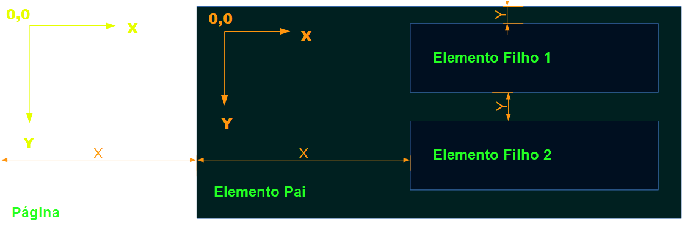

O posicionamento de elementos utilizando o CSS é feito indicando as medidas de deslocamento horizontal e vertical de acordo com a página. Mas primeiro vamos entender como o navegador renderiza a página, imagine o seguinte código:
<div><p>Oi!</p></div> <div><p>Como vai?</p></div> <div><p>Qual o seu nome?</p></div>
Temos três elementos div, cada qual com um elemento filho, nenhum valor de largura e altura e nenhum posicionamento especial dentro da página foram definidos. O que acontecerá é que os valores de altura e largura serão calculados automaticamente de acordo com o conteúdo e um elemento será posicionado após o outro, como elementos div possuem um display:block, um estará abaixo do outro. Se não houver nenhum elemento anterior, a posição do primeiro elemento será 0 no eixo X, a partir do lado esquerdo da página e 0 no eixo Y a partir do topo da página.
Quando um elemento está contido dentro de outro, sua posição é calculada não a partir da esquerda e do topo da página, mas do elemento pai.
Isto pode ser ilustrado da seguinte maneira:
Na ilustração acima, a posição 0,0 do elemento pai, é o canto superior esquerdo da página e a posição 0,0 dos elementos filhos, é o canto superior esquerdo do elemento pai.
Agora vejamos o seguinte estilo:
div {
top: 50px;
left: 150px;
position: relative;
background-color: crimson;
width: 300px;
height: 100px;
}
Note nas linhas destacadas no CSS as propriedades left, top e position, é por meio destas propriedades que alteramos a posição de um elemento na página, as propriedades utilizadas para definir o posicionamento são: top, left, bottom, right. Enquanto isso a propriedade position é utilizada para definir como o posicionamento é calculo. O resultado deste CSS é:
Os valores possíveis para a propriedade position são:
position: static
position: fixed
position: relative
position: absolute
position: sticky
Cada uma deve ser utilizada de acordo com a necessidade de posicionamento do elemento, vejamos o funcionamento analisando o código a seguir:
<div id="conteiner"> <div id="filho1"><p>Postion static</p></div> <div id="filho2"><p>Position static</p></div> </div><style>
#filho1 {
width: 300px;
height: 50px;
background-color: #324C;
margin: 5px;
position: static;
left: 50px;
top: 25px;
}
#filho2 {
width: 300px;
height: 50px;
background-color: #0AAC;
margin: 5px;
position: static;
left: 50px;
top: 25px;
}
#conteiner {
left: 100px;
background-color: crimson;
position: relative;
width: fit-content;
height: fit-content;
}
</style>
Neste código, o elemento pai possui um posicionamento relative, que o permite ter um recuo de 100px à esquerda de acordo com a propriedade left.
Posicionamento estático static:
Esse é o valor padrão e não precisa ser especificado. As margens podem ser colapsadas de acordo com o tipo de elemento. Os elementos são dispostos na ordem em que aparece, valores top, right, left e bottom são ignorados. O resultado do código anterior é:
Posicionamento relativo relative:
As margens não colapsam e são respeitadas, o que quer dizer que os elementos irmãos são dispostos um após o outro. Os valores de posicionamento são calculados a partir da caixa do elemento pai.
Posicionamento absoluto absolute:
Uma posição absoluta significa que o elemento define sua posição de acordo com o elemento pai ignorando completamente o restante dos elementos irmãos no mesmo contêiner.
Posicionamento fixo fixed:
Possui as mesmas características que o valor absolute, no entanto permanece fixo em sua posição ignorando a rolagem da página.
Posicionamento dinâmico sticky:
Possui as mesmas características que o valor relative, no entanto ao chegar o topo da página durante a rolagem, o elemento se torna fixo sobrepondo o anterior.
Ao utilizar as propriedades bottom, left, right, e top, leve sempre em conta que ela é calculada não pelo documento HTML que extrapola os limites da tela, mas a parte da página visível na tela, por exemplo um elemento com bottom: 0;, será visível sempre no rodapé do navegador e não no final da página.
Enquanto as propriedades bottom, top, right e left definem o posicionamento nos eixos X e Y, na vertical e na horizontal, a propriedade z-index define o posicionamento de um elemento no eixo Z, muito familiar para quem trabalha com modelagem 3D. Se você leu um pouco sobre coordenadas cartesianas já deve ter compreendido, caso contrário, imagine que ao olharmos para uma página, estamos olhando para elementos dispostos no fundo de uma caixa, o que vemos é isso:
Ao definirmos valores de z-index, estamos dizendo se o elemento está embaixo ou acima dentro dessa caixa tridimensional, agora você pode visualizar a página assim:
Esta explicação é puramente didática, na realidade você não pode definir a “espessura”, ou o tamanho de um elemento no eixo Z, apenas sua posição então imagine essa posição como a posição de uma folha num maço de páginas. Aliás, muitos programadores costumam chamar o posicionamento no eixo Z de Posicionamento em Pilha., pois o que fazemos realmente é empilhar elementos uns sobre os outros.
Vamos supor que você tem o seguinte HTML:
<div id="conteiner"> <div id="filho1"><p>Elemento 1</p></div> <div id="filho2"><p>Elemento 2</p></div> <div id="filho3"><p>Elemento 3</p></div> </div>
Você já sabe que sem definir um estilo CSS, os elementos serão dispostos um embaixo do outro, mas eles também ocuparão a mesma camada no eixo X. Mas o que aconteceria se definíssemos sua posição como absoluta? Considere o seguinte CSS:
#filho1 {
width: 300px;
height: 50px;
background-color: #AAAC;
position: absolute;
z-index: 1;
}
#filho2 {
width: 300px;
height: 50px;
background-color: #0AAC;
position: absolute;
margin: 20px;
}
#filho3 {
width: 300px;
height: 50px;
background-color: #A0AC;
position: absolute;
margin: 40px;
}
#conteiner {
background-color: crimson;
width: fit-content;
height: fit-content;
}
Todos os elementos filhos possuem uma posição absoluta e deslocamentos diferentes definidos na margem, o resultado seria esse:
Notou que o Elemento 3 está no topo, o 1 no meio e o 2 embaixo de todo mundo? Para ordenar os elementos, definindo qual fica sobre qual, podemos definir a propriedade z-index assim:
#filho2 {
width: 300px;
height: 50px;
background-color: #0AAC;
position: absolute;
z-index: 2;
margin: 20px;
}
#filho3 {
width: 300px;
height: 50px;
background-color: #A0AC;
position: absolute;
z-index: 3;
margin: 40px;
}
Os elementos 2 e 3 possuem um índice maior, o resultado deve ser semelhante a este:
Um elemento que possua z-index: -1; será ocultado abaixo do background do documento. Elementos que necessitam estar sempre sobre todos os outros elementos costumam ser definidos com valores altos como z-index: 9999;
A propriedade float, criada originalmente para inserir imagens dentro de blocos de texto, pode ser utilizada para fazer elementos HTML flutuarem em diferentes partes da página e controlar como o conteúdo ao seu redor interage com eles.
Podemos definir uma imagem para flutuar à esquerda de um texto e aplicar uma margem de modo que o texto circundará a imagem e um elemento não sobreporá o outro, veja um exemplo:
<img src="1.png" alt="Minha imagem"><p>
Mussum Ipsum, cacilds vidis litro abertis. Tá deprimidis, eu conheço uma cachacis que pode alegrar sua vidis.Si num tem leite então bota uma pinga aí cumpadi!Suco de cevadiss, é um leite divinis, qui tem lupuliz, matis, aguis e fermentis.Diuretics paradis num copo é motivis de denguis.
</p>
<p>
Quem manda na minha terra sou euzis!Todo mundo vê os porris que eu tomo, mas ninguém vê os tombis que eu levo!Cevadis im ampola pa arma uma pindureta.Tá deprimidis, eu conheço uma cachacis que pode alegrar sua vidis.
</p>
<p>
Paisis, filhis, espiritis santis.Per aumento de cachacis, eu reclamis.Nullam volutpat risus nec leo commodo, ut interdum diam laoreet. Sed non consequat odio.Interagi no mé, cursus quis, vehicula ac nisi.
</p>
<style>
img {
float: left;
width: 20%;
padding-right: 20px;
padding-bottom: 20px;
}
</style>
Neste exemplo a imagem flutua à esquerda e sempre possuirá 20% do tamanho da tela, o resultado é semelhante a este:
Perceba que para a imagem estar alinhada à esquerda e acima, com o texto, especificamos margem ou padding apenas à direita e embaixo.
Os valores possíveis para a propriedade float são:
float: left; À esquerda.
float: right; À direita.
float: inline-start; À esquerda dos elementos irmãos no contêiner.
float: inline-end; À direita dos elementos irmãos no contêiner.